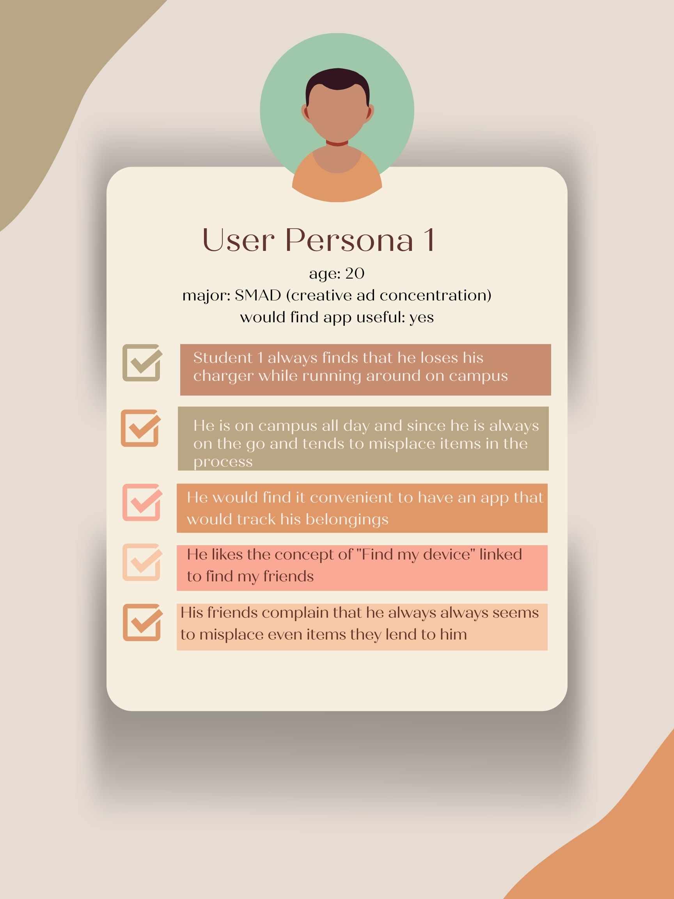
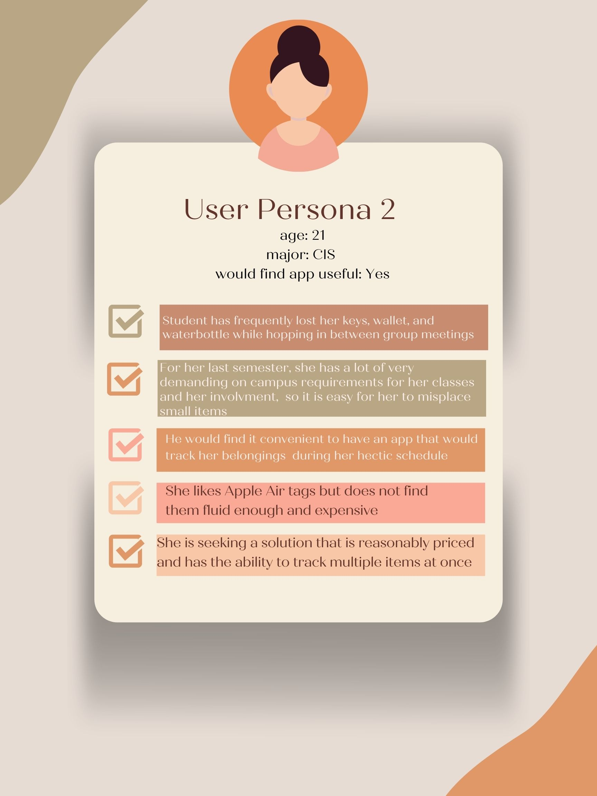
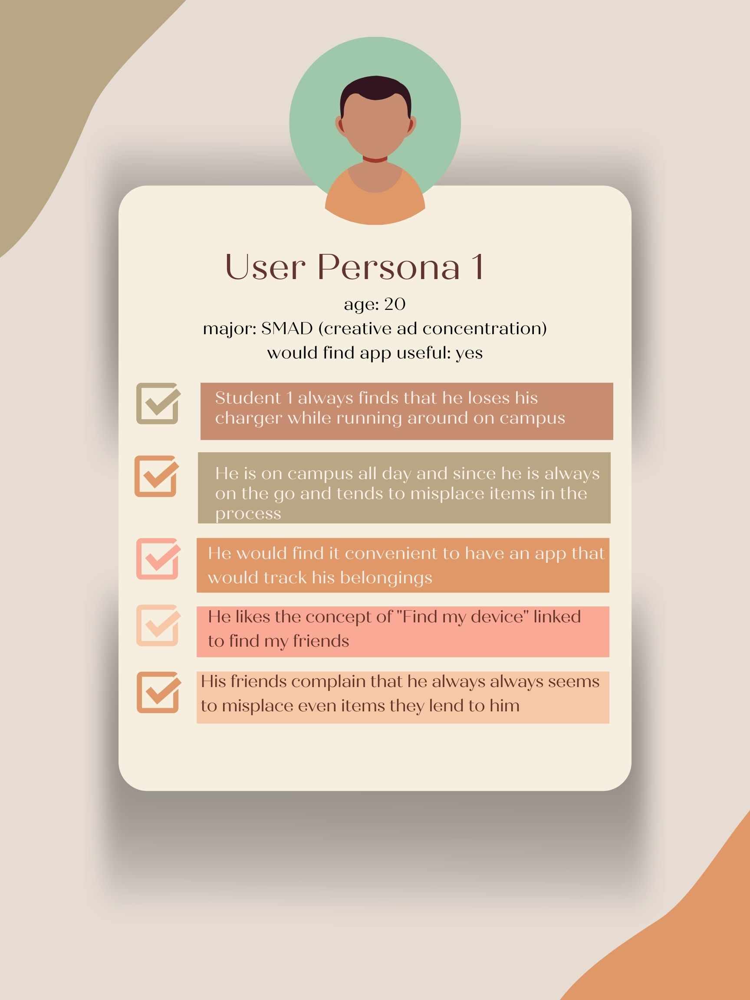
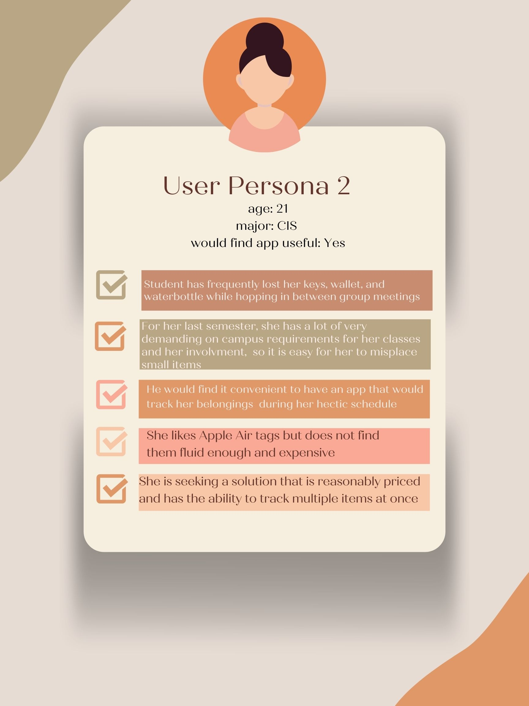

After creating a series of sketches for the previous assignments, the one word that came to mind was “solution”. Although that may sound vague, Technically Wrong has time and time again circled back to a series of problems that are in need of solutions. In this case, something that stuck out ot me was the frequency that I have heard peers, adults, and people of all ages say the phrase “i lost something but cannot find it”. Although that too may sound vague, particularly I am talking about items that have no sort of tracking device (not including iphones, or airpods, or any devices that can be tracked on find my friends. Particularly, keys, wallets, chargers. Ect. Overall, my target audience would be primarily students (beyond just SMAD and CIS students) but also anyone who loses track or site of thier belongings.
My solution? Stick n track, a QR code sticker that can be attached to any sort of item and linked to an app so that item may be tracked. This concept is similar to that of find my friends and apple airtag. My idea is to make this tracker more fluid and have it be a more multi-purpose tool for several items and or devices. In chapter 4 of "Technically Wrong", there is a subheading titled "Naming the Problem". In this case, the issue needed to be addressed deals with the generalizations of what tracking tools should be used for items or devices (whereas in the chapter it deals with the notion of usernames).
In regards to the process and planning of this project, I plan on doing extensive user research and interviews (similar to the manner in which projects for 317 and 327 were done). I want to not only interview and survey SMAD and CIS, but include all students as a whole and potentially professors. Getting feedback all around from a variety of people is crucial. To start off I plan on doing a google forms to send out to several people and going from there. Based on those results I will craft experiments and interview set ups and attain more information by doing extensive research.
 


